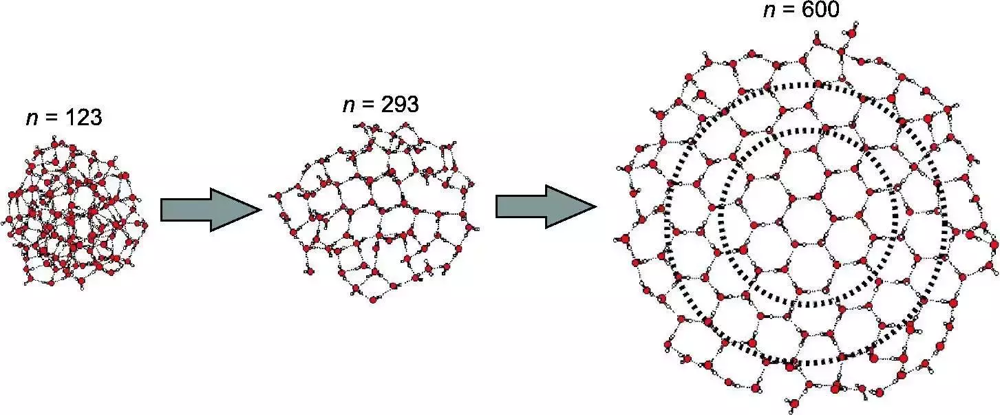

Crystaline
Polymorph: 18 ?
Ice rules
Amorphous
Polymorph: 5
Structure dependant on deposition conditions
Note
Show 2 samples deposited at different T conditions
Same T but different thickness
Introduction
The first experimental description of amorphous water ice has been achieved in 1935 by [BURTON and OLIVER, 1935] that deposited water vapor on a copper rod maintained at -155 ℃. It has since been an intense subject of research
Why ?
…
Questions
difference between vitreous material and amorphous solid ?
Glassy vs vitreous ?
[Narten et al., 1976] showed that different deposition temperatures using the same vapor deposition setup and methodology would lead to two different forms of amorphous ice, where those differences are inferred from diffraction data (both Neutron and X-Ray):
Ice deposited at 77K is low density
Diffraction pattern consistent with a structure that has oxygen-oxygen nearest-neighbor tetrahedral symmetry on average, and a nearest neighbor 0-0 separation of 2.76 Å with small dispersion; -> What is meant by this ?
Density estimated 0.94 g.cm-3
Ice deposited at 10K is high density
Diffraction pattern similar to, yet distinctively different from, that of the high temperature deposit. The 0-0 nearest neighbor distance is the same. 2.76 Å but the dispersion in this separation is larger in the low temperature form.
Diffraction pattern shows an extra peak at 3.3 Å. corresponding to about 1.4 molecules. the existence of which is responsible for the estimated higher density, namely 1.1 g.cm-3
Question
How is the density determined from Diffraction data
[Loerting et al., 2011] 5 main categories of Amorphous ice
ASW
HGW
LDA
HDA
vHDA
When subject to increasing pressure, amorphous ice soften (what is meant by this ?) and then suddenly collapse to a denser but still amorphous phase. This result is verified by computer simulations where density and structure of the high density amorphous form depends on the potential function chosen to represent the water.
to verify (ref 5 - 7) simulation 8-9
Despite the non-crytalline nature of the molecular arrangements in LDA, both the thermodynamic state and the vibrational characteristics are those of a highly ordered substance. The heat carrying phonons of low temperature amorphous water behave like those in a crystal.
What does this mean, where does it come from ? Similar (but less dramatic) behaviour have been observed in other tetrahedrally coordinated solid (SiO2, GeO2, ZNCl2 etc).
Vapor deposition methods were employed to prepare ASW for the following studies:
Calorimetry
Spectroscopy
vapor pressure and free energy
Crystalisation 33,35,34,36
[Safarik et al., 2003] - Thickness dependance, Investigated by TPD
model : 78 - 79
Dielectric relaxation
Neutron and X-ray diffraction structure studies
diffusion studies
electron microscope
vibrational dynamics studies (by neutron scattering)
Thermal conductivity studies
The sharp crystallization exotherm commencing in the range of 150–160 K during reheating is the one universal feature of all previous studies of ASW or vitreous water.
cold microtoming method (68)
decompression amorphization (73)
electron bombardment vitrification (67, 76, 76a) - could be compatible with accoustic levitation
radiation damage–induced vitrification (77)
phase-separation vitrification (12)
plunge freeze (67)
Note
strong upswing in heat capacity seen in bulk laboratory supercooling water (81)
Heat capacity increase is also a main varying parameter obeserved during glass transition (Tg)
Narten et al. (39)
random structure of ASW.
second form of ASW - additional peak at 3.3 ̊Angstrom (interstitial water molecule) - Higher density (observed at 10K)
First indication of the existence of polyamorphism
do they coexist in metastable equilibrium Mishima 5-7
desorption kinetics are substrate dependent and suggest strongly that the film morphology is governed by the hydrophilicity of the substrate.
crystallization kinetics are independent of substrate but depend strongly on both temperature and film thickness and are consistent with a spatially random nucleation and isotropic growth model.
dramatic acceleration of the crystallization rate is observed for amorphous films on crystalline ice substrates
crystallization-induced cracking of the films
To check
Katrina …
How does amorphous ices differs from its crystaline conterpart ? Well it depends on the formation route of the amorphous ice.
Polymorph: 18 ?
Ice rules
Polymorph: 5
Structure dependant on deposition conditions
Note
Show 2 samples deposited at different T conditions
Same T but different thickness
Amorphous ice - supercooled liquid water
Note
Debye frequency spectrum
2, 28, 30, 31, 61, 82, 91, 105, 107
Rice and coworkers (29 - 30b) review 2
Note
Dangling bonds in crystaline solids (106)
Variation of the deposition angle
Controlling the Morphology of Amorphous Solid Water
Deposition temperature variations
Annealing processes
Controlling the
Different types
Insert here table of different groups:
NASA Ames: Mastrapa, Sandford
Is data available, yes
Key Papers:
Mastrapa (2008, 2009)
Jenny
ASW is porous
3 µm band is changing when the T is increased
Water ice IR Band assignement taken from [Mastrapa et al., 2009]
Crystaline (cm -1) |
Amorphous (cm -1) |
Assignment |
A values (cm/molecule) |
|---|---|---|---|
840 |
802 |
ùúàR [Ockman, 1958] |
2.8 × 10-17 |
1650 |
1660 |
ùúà2 [Ockman, 1958] |
1.0 × 10-17 |
2266 |
2220 |
ùúà2 + ùúàR [Whalley, 1977] |
3.3 × 10-18 |
3150 |
3191 |
ùúà1 in phase [Whalley, 1977] |
|
3220 |
3253 |
ùúà3 TO [Whalley, 1977] |
1.7 × 10-16 |
3380 |
3367 |
ùúà3 LO, ùúà1 out of phase [Whalley, 1977] |
to cite:
d [Ockman, 1958]
e [Whalley, 1977]
Note
TO, LO, what does this mean ?
Insert own crystaline and amorphous spectra with different asssignments vertical bar
Link with Optical Constants
Real and imaginary part (how do they relate to what we observe in space)
tg at 136K (ramp 30K.min-1) –> Increase in heat capacity (lower than other amorphous solid: similar to SiO2 - GeO2) –> Imply limited number of entropically different configurational states in the fluid state following tg
Dielectric relaxation behaviour expected to be determined by two processes both involving a thermaly activated dipolar reorientation:
translational-rotational diffusion of water molecules if the whole H-Bonded network relaxed within limitation of entropically different configurations
rotational diffusion of water molecules within a fixed H-Bonded structure as breaches of the Bernal-Fowler rules. –> 2 kinds of Bjerrum defects
Scattering
ASW at 140K - true glass or very viscous liquid ? What is the difference
At molecular scales (few molecules up to 100 ?) - Matrix isolation techniques

Fig. 10 Source#
{kind=link}